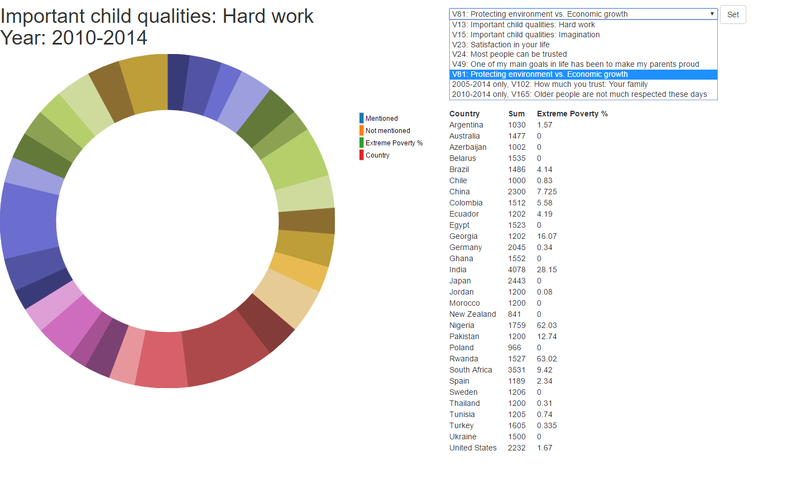
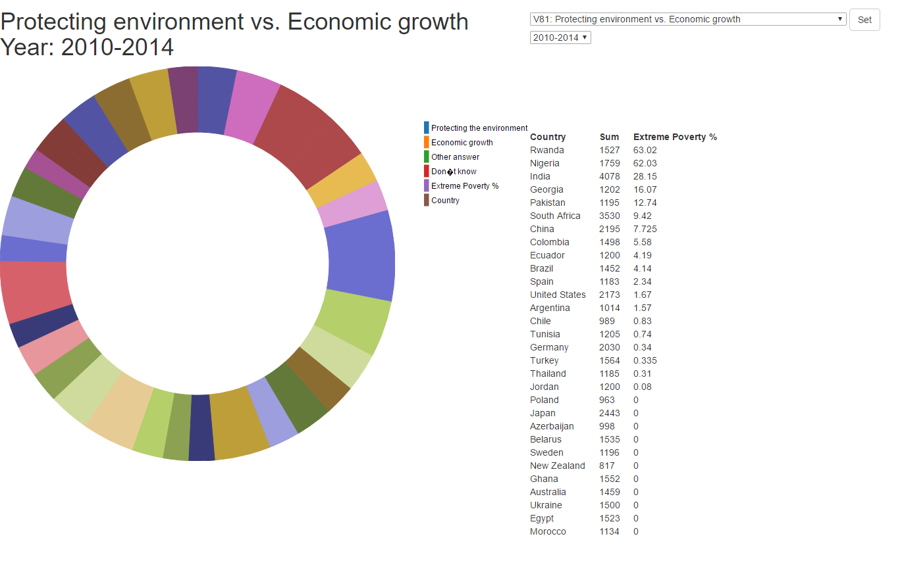
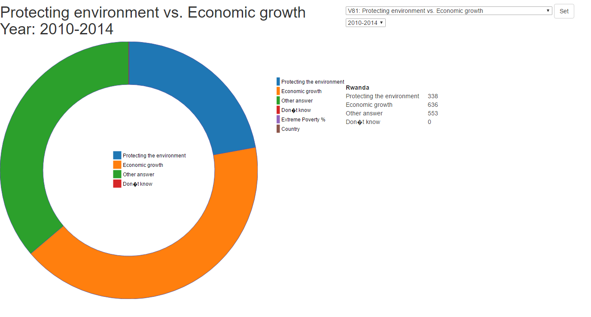
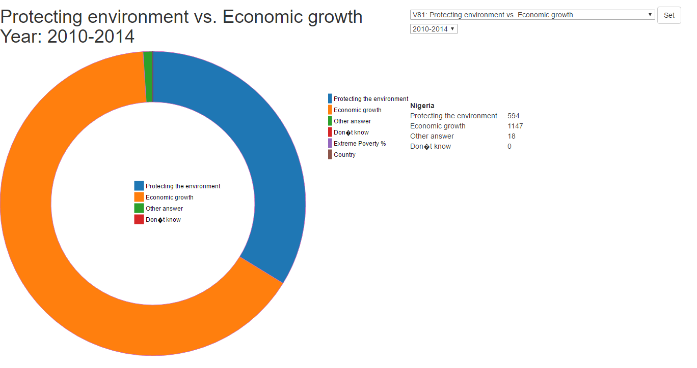
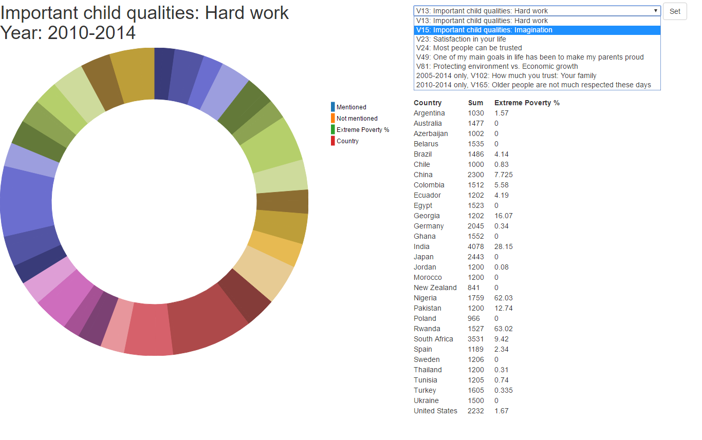
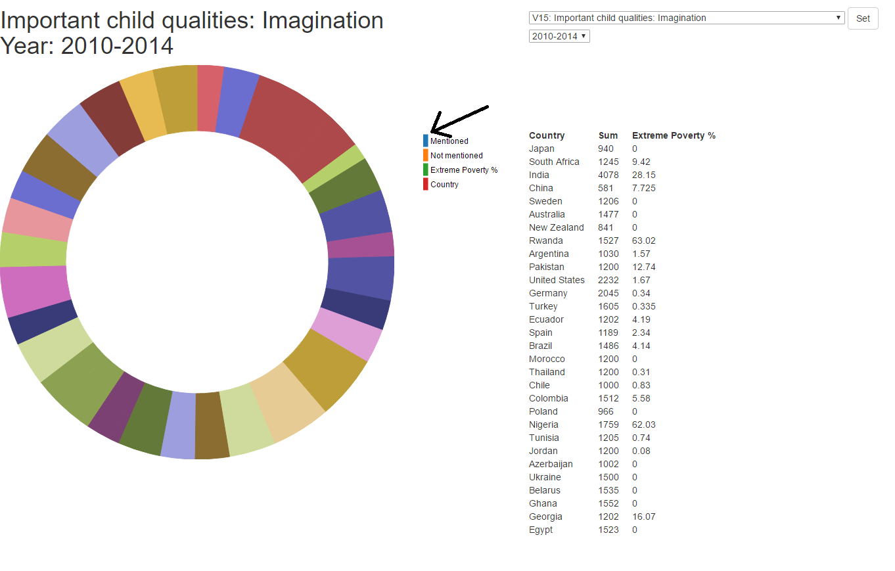
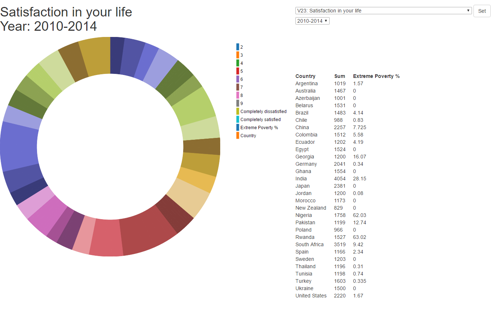
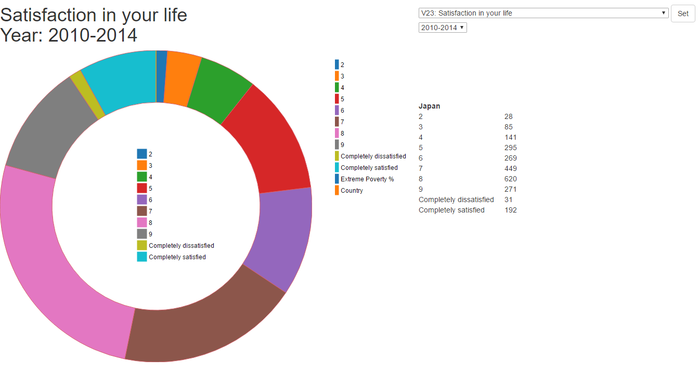
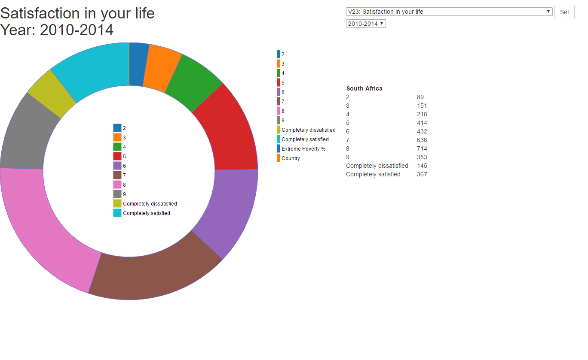

Important child qualities: Hard work Year: 2010-2014
What I learned
Back in 1995 Japan didn't know if they wanted economic growth and they still didn't 2014 (I just thought that was kind of funny that they had the biggest partion of people picking that option then and now so to speak)
One thing to note is that the Gapminder data is the "Extreme Poverty %" and is a mean over the years that the different waves represent, 0 usually means no data.
I learnt a lot more about D3 in this. I think this is tidier than my project 1 and it has more functional interactivity. I learnt to read multiple datasources, to clean the data
before use. I did this manually thought, maybe I shouldn't have? Just in general learning how to make something that's not overly crowded with texts and such while still trying to maintain interest in the visualization.
As for general knowledge I learnt that people in Georgia and Egypt are not very happy with their lives and that they don't really think
that imagination is important.
Analytic trail 1
Do poor countries, in general, prefer economic growth rather than protecting the environment? Is there any difference between rich and poor countries?
We first select the "Protecting environment vs economic growth" variable for years 2010-2014.

We then sort with respect of the poverty %.

We explore the content of the top countries by either clicking in the table or in the donut chart


Not much to go on here. Only really Nigeria that really favoured economic growth. One thing to note is that the extreme poverty
may not be the best variable to use in context to a "poor" country since it only says how many earn less than a 1.15$ per day.
In conclusion; It does not seem to be the case that "poorer" countries feel like economic growth is more important. It varies.
Analytic trail 2
Do countries that value imagination as a quality in children also think they are satisfied in life? Has this changed over time? Any difference between poor and rich countries?
Begin by looking up the top countries that mentions imagination as a quality in children by selecting the variable in the drop down menu.

We sort the donut chart as well as the table by pressing the desired variable in the legend-domain
as seen here:

So we will at least check; Japan, South Africa, India, China and Sweden for the next variable

Quite a bit of variables here so we wont do any sorting. We'll explore the said countries individually to see. We're looking for
completely satisfied, a nine and an eight at least. Seven might be okay as well. Unfortunately due to little time there is no way to select these variables
to display as a group.


As you can see both countries has over half of the sample-size saying that they are happy with their lives according to my definition (7 and above).
India had almost half, China well over half and Sweden had above 75%!!
Egypt ang Georgia both had very low mentioning on imagination. Both of them also had lower satisfaction in life than others.
Both have the biggest portion of completely dissatisfied people and Egypt even had the most!